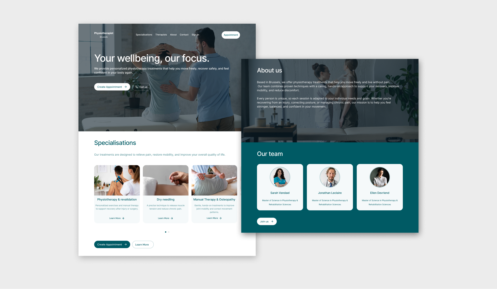
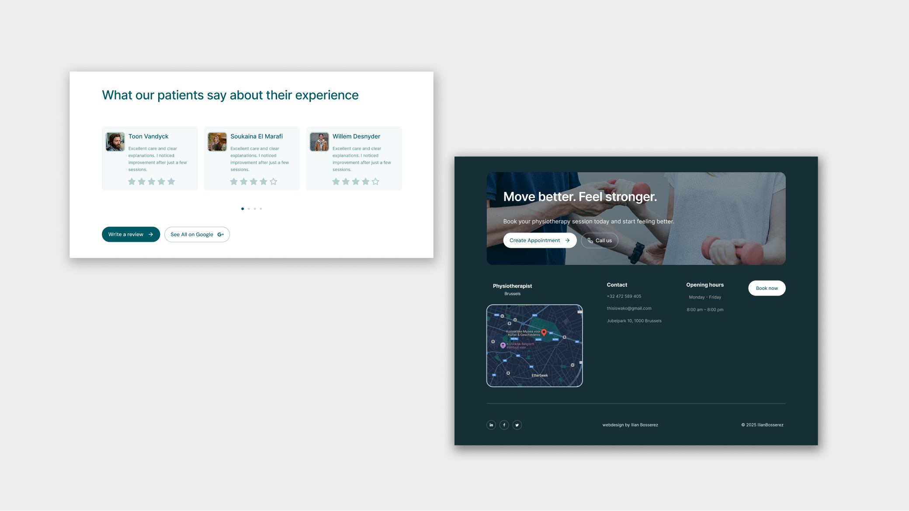

A calm, accessible web experience designed for a Brussels physiotherapy practice. The website focuses on clarity, easy navigation, and a frictionless booking flow. Built with WCAG-friendly components to ensure inclusivity and comfort for users of all ages.
Year
2025
Deliverables
UX flows & IA
Accessible UI kit (WCAG)
Visual design & micro‑interactions
Prototype / Frontend handoff
Accessible UI kit (WCAG)
Visual design & micro‑interactions
Prototype / Frontend handoff
Stack
Goals
Fast appointment booking
Specialisations at a glance
Trust & clarity across devices
Specialisations at a glance
Trust & clarity across devices





Enjoyed it?
Explore more projects!
Next project